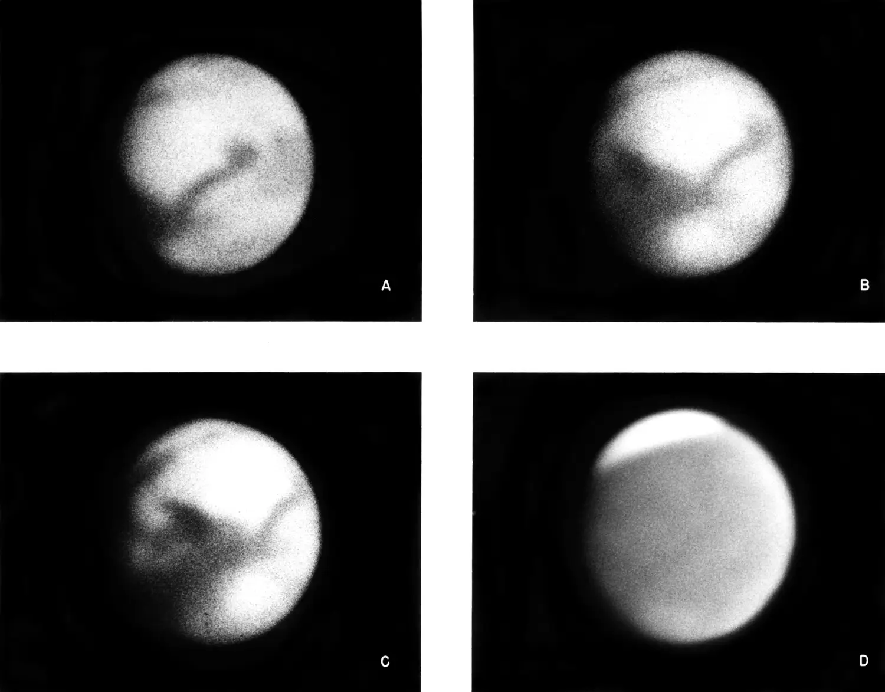
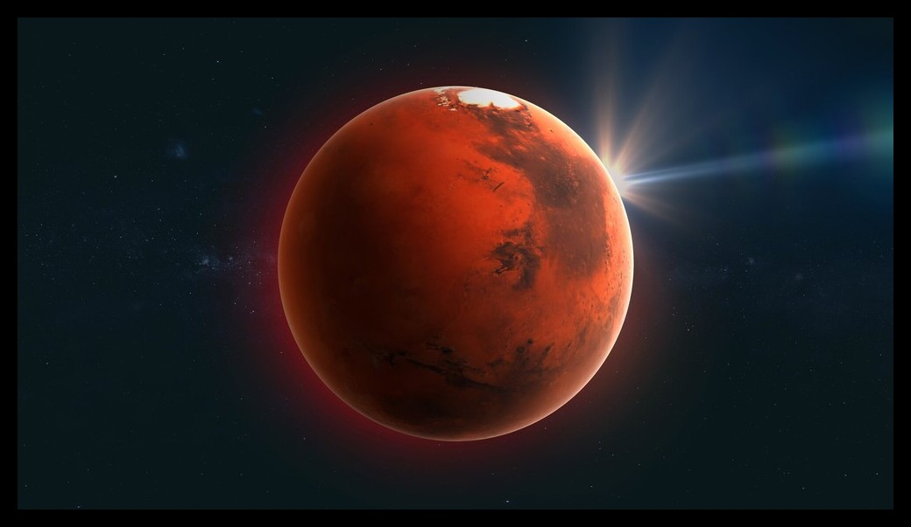

For search for life, understanding the surface and the planet's evolution, and preparing for future human exploration.
Below you may view deeper explanation
Sound of Mars
It has an unusual atmosphere compared to Earth,
with very different temperature, density, and chemistry
These differences are three main affects on the way sound works there.
First ever photo of Mars
Photo took by Astronomers in September 11, 1956
Why Mars?
At an average distance of 140 million miles, Mars is one of Earth's closest habitable neighbors. Mars is about half again as far from the Sun as Earth is, so it still has decent sunlight. It is a little cold, but we can warm it up. Its atmosphere is primarily CO2 with some nitrogen and argon and a few other trace elements, which means that we can grow plants on Mars just by compressing the atmosphere. Gravity on Mars is about 38% of that of Earth, so you would be able to lift heavy things and bound around. Furthermore, the day is remarkably close to that of Earth.
